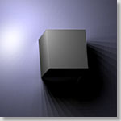

|  |
Image-based Rendering with Controllable Illumination
Tien-Tsin Wong
,
Pheng-Ann Heng
,
Siu-Hang Or
and
Wai-Yin Ng
,
|
Abstract
-
This paper discusses a new image-based rendering method,
based on the light field and Lumigraph system,
which allows illumination to be changed interactively.
Although our approach does not try to
recover or use any geometrical information (e.g. depth or surface normal)
to calculate the illumination,
the resulting images are physically correct.
- The scene is first sampled from different view points and under different illuminations. By treating each pixel on the back plane of the light slab as a surface element, the sampled images are used to measure the apparent BRDF of each surface element. The tabular BRDF data of each pixel is further transformed to the spherical harmonics domain for efficient storage. Whenever the user changes the illumination setting, a certain number of views are reconstructed. The correct user perspective view is then displayed using the texture mapping technique of the Lumigraph system. Then, the intensity, the type and the number of the light sources can be manipulated interactively.
Download Paper
- Acrobat:
illumin.pdf (size: 637 KB)(with correction done on 23 Sept 1997)
Movies
The following movies demonstrate the reconstructed results of an image-based scene illuminated by different types of light sources.|
|
| |||
| Illuminated by a directional source. | Illuminated by a point light source. |

Related Publications
- "
Real-Time Relighting of Compressed Panoramas",
T. T. Wong, S. H. Or and C. W. Fu,
Graphics Programming Methods, Edited by J. Lander, Charles River Media, 2003, pp. 375-288. - "
Interactive Relighting of Panoramas",
T. T. Wong, C. W. Fu and P. A. Heng,
IEEE Computer Graphics & Applications, Vol. 21, No. 2, March-April 2001, pp. 32-41. - "
The Plenoptic Illumination Function",
T. T. Wong, C. W. Fu, P. A. Heng and C. S. Leung,
IEEE Transactions on Multimedia, Vol. 4, No. 3, September 2002, pp. 361-371.
(This paper received the IEEE Transactions on Multimedia Prize Paper Award 2005.)